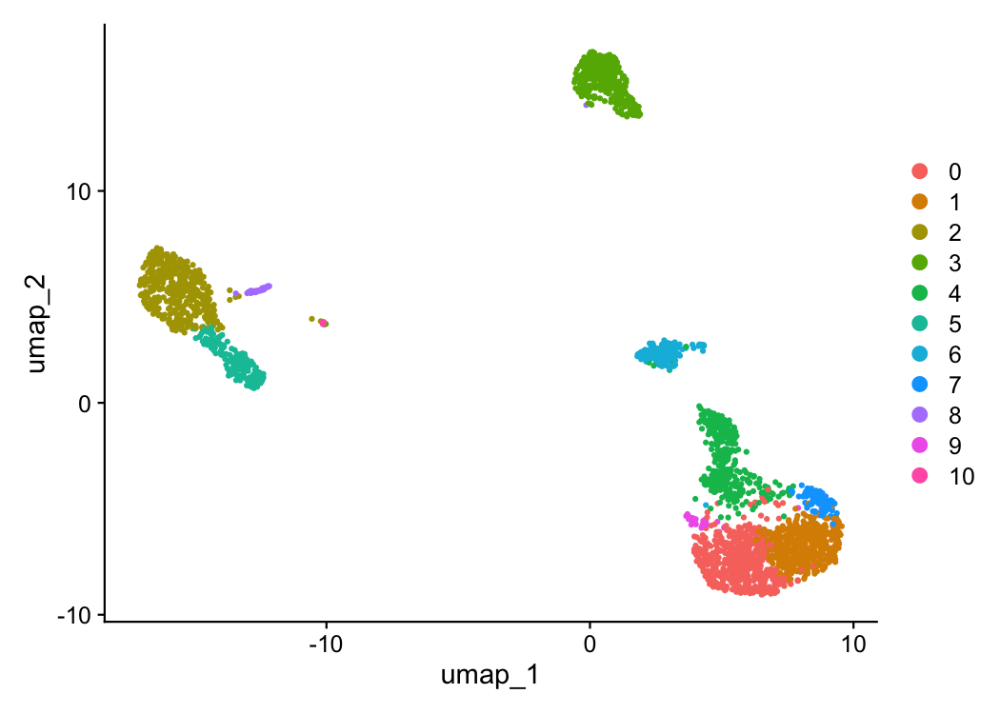
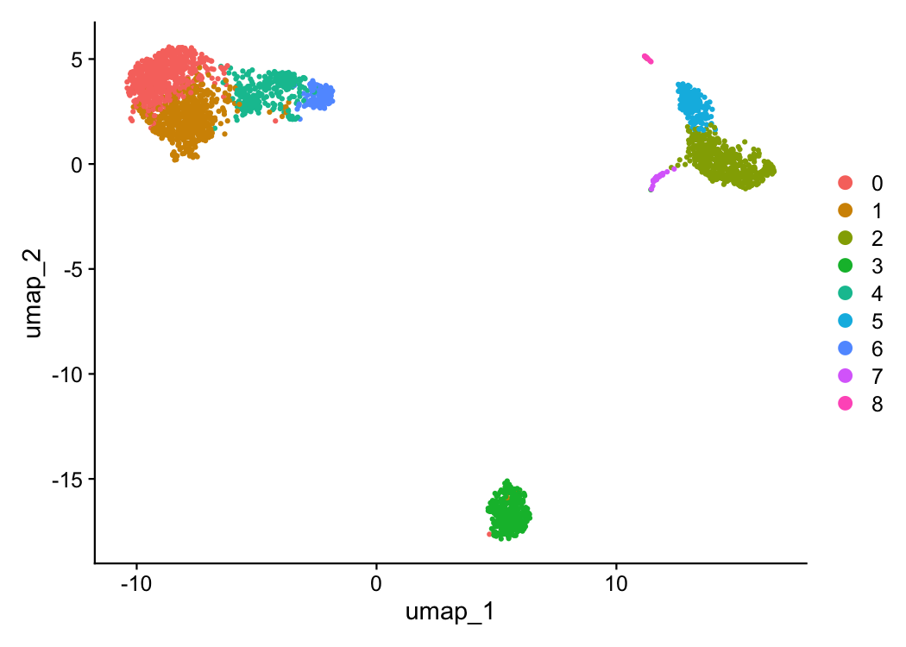
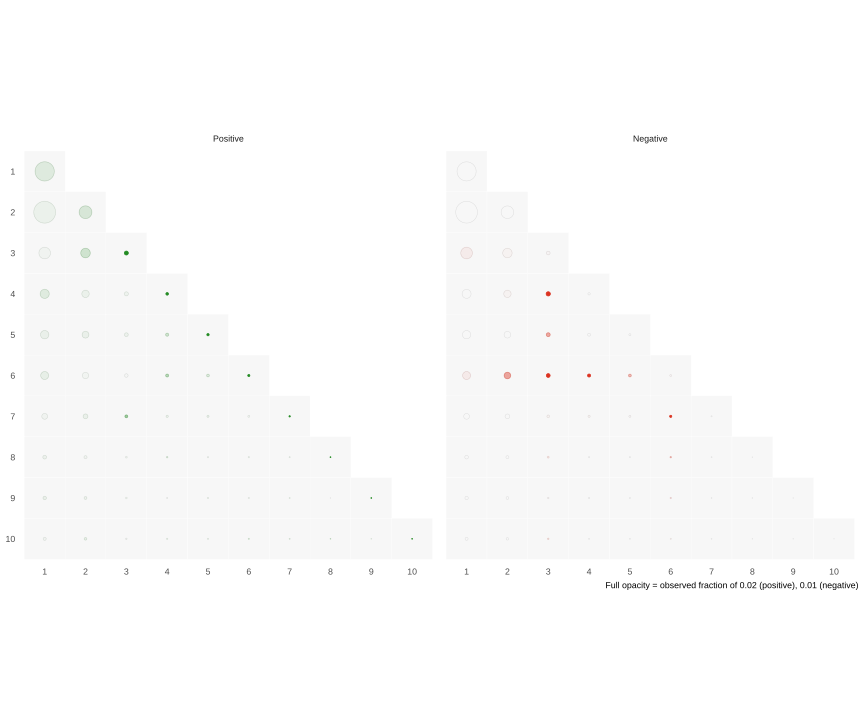

Getting started with BigSur
tutorial.RmdWhat is BigSur?
BigSur (Basic Informatics and Gene Statistics from Unnormalized Reads) is a program which adjusts common statistics to account for the over-dispersed structure of scRNA-seq data and allows for the principled estimation of their respective p-values.
This has been implemented to:
Calculate and statistically evaluate a modified corrected Fano factor for use in feature selection.
Calculate and statistically evaluate a modified corrected Pearson correlation coefficient to analyze gene-gene correlations.
This tutorial will take you through a step-by-step tutorial of how to use both the feature selection and correlation calculation features of BigSur using the PBMC 2k dataset from 10X Genomics.
Feature selection and clustering with the modified corrected Fano factor.
First, let’s load the libraries and data that we’ll be using.
library(Seurat)
#> Warning: package 'Seurat' was built under R version 4.3.3
#> Loading required package: SeuratObject
#> Warning: package 'SeuratObject' was built under R version 4.3.3
#> Loading required package: sp
#> Warning: package 'sp' was built under R version 4.3.3
#> Registered S3 method overwritten by 'future':
#> method from
#> all.equal.connection parallelly
#>
#> Attaching package: 'SeuratObject'
#> The following objects are masked from 'package:base':
#>
#> intersect, t
library(BigSur)
#Load PBMC dataset and create Seurat object. We'll stick to the parameters used for the Seurat tutorial. The following code will download the data to a temporary file path and convert it into a Seurat object.
data.dir <- file.path(tempdir(), "pbmc3k")
if (!dir.exists(data.dir)) {
url <- "https://cf.10xgenomics.com/samples/cell/pbmc3k/pbmc3k_filtered_gene_bc_matrices.tar.gz"
tf <- tempfile(fileext = ".tar.gz")
download.file(url, tf)
untar(tf, exdir = data.dir)
}
pbmc_data <- Read10X(file.path(data.dir, "filtered_gene_bc_matrices/hg19"))
pbmc <- CreateSeuratObject(pbmc_data)
#> Warning: Feature names cannot have underscores ('_'), replacing with dashes
#> ('-')
pbmc[["percent.mt"]] <- PercentageFeatureSet(pbmc, pattern = "^MT-")
pbmc <- subset(pbmc, subset = nFeature_RNA > 200 & nFeature_RNA < 2500 & percent.mt < 5)
#We need to also remove any genes with 0 UMI counts.
counts <- Seurat::GetAssayData(pbmc, assay = "RNA", layer = "counts")
keep_genes <- Matrix::rowSums(counts) > 0
pbmc <- subset(pbmc, features = names(keep_genes[keep_genes]))The most commonly utilized feature selection methods implemented in R (Seurat’s FindVariableFeatures function and SCTransform) return a set number of features to be used in clustering. This is fine in the case where cell states are well separated from one another, but can add substantial noise when trying to separate more subtly different ones. BigSur implements statistical thresholding to remove genes which do not have sufficient evidence of truly varying between cells.
The two most important parameters for modified corrected Fano factor-based feature selection are fano.alpha and min.fano.
fano.alpha determines the adjusted p-value threshold above which a gene will not be selected. min.fano is the minimum value of the modified corrected Fano factor below which a gene will not be selected.
These two parameters allow you to tune the number of features that will be used for analysis. p-value thresholding is very sensitive to deviations from the null value of one, mostly removing very lowly expressed genes from consideration. It can be paired with a Fano threshold to further prune the number of features.
Let’s start with the default values (fano.alpha = 0.05, min.fano = 1.0):
pbmc_BS <- BigSur(pbmc, min.fano=1, fano.alpha = 0.05)
#> [1] "Modified corrected Pearson residuals calculated."
#> [1] "Modified corrected Fano factors calculated."
#> [1] "Beginning identification of significant mcFanos."
#> [1] "Highly variable features identified."
#> [1] "Pipeline complete."We can check the modified corrected Fano factors and their respective p-values for each gene.
mcfanos <- pbmc_BS@assays$RNA@meta.data$mcfanos
mcfanoPvals <- pbmc_BS@assays$RNA@meta.data$BH.Corrected.Pvalue
genes <- rownames(pbmc_BS)
df <- data.frame(
Gene <- genes,
mcFano <- mcfanos,
Adj.Pval <- mcfanoPvals
)
df_sorted <- df[order(df$mcFano, decreasing=T), ]
head(df_sorted, n=20)
#> Gene....genes mcFano....mcfanos Adj.Pval....mcfanoPvals
#> 4023 PPBP 94.68106 0.000000e+00
#> 16018 ARVCF 74.75694 1.207540e-246
#> 4798 CTB-113I20.2 58.72662 3.715856e-211
#> 8346 GBGT1 53.13703 2.427013e-255
#> 13768 YPEL2 52.31760 5.906283e-307
#> 14623 FAM210B 51.20144 0.000000e+00
#> 700 LRRIQ3 50.99809 5.789617e-196
#> 9223 MICALCL 49.62680 2.850233e-186
#> 6173 UBE2D4 46.41779 5.237942e-280
#> 6383 GJC3 44.85448 1.829023e-148
#> 11558 TTC8 42.88400 5.091287e-164
#> 15448 EID2 42.68005 9.289739e-214
#> 5046 DOK3 40.86849 3.010917e-275
#> 5275 HIST1H1B 39.79304 1.829697e-185
#> 9691 PGM2L1 39.05957 1.531779e-240
#> 2723 GMPPA 38.69322 1.216680e-294
#> 4007 IGJ 38.66830 0.000000e+00
#> 2005 MTIF2 35.95522 1.119633e-250
#> 4022 PF4 35.52469 0.000000e+00
#> 4495 MOCS2 35.52317 3.170730e-293Genes which met the thresholding criteria will be stored in the typical variable features slot. Let’s see how many there are.
length(VariableFeatures(pbmc_BS))
#> [1] 2734Now let’s try with a more strict minimum Fano threshold.
pbmc_BS <- BigSur(pbmc, min.fano=1.3, fano.alpha=0.05)
#> [1] "Modified corrected Pearson residuals calculated."
#> [1] "Modified corrected Fano factors calculated."
#> [1] "Beginning identification of significant mcFanos."
#> [1] "Highly variable features identified."
#> [1] "Pipeline complete."
length(VariableFeatures(pbmc_BS))
#> [1] 2552We can use these features to cluster and plot cells in the typical manner. Here, we will also demonstrate that the modified-corrected Pearson residuals can be used in place of log-normalized counts for this purpose. They will automatically be stored in the same slot as is you had run NormalizeData.
pbmc_BS <- ScaleData(pbmc_BS)
#> Centering and scaling data matrix
pbmc_BS <- RunPCA(pbmc_BS)
#> PC_ 1
#> Positive: CD3D, IL32, PTPRCAP, LDHB, CD3E, LTB, CXCR4, CD7, IL7R, GZMM
#> AES, CCR7, ISG20, CD69, JUN, EIF4A2, RHOH, CCL5, GLTSCR2, GZMA
#> CTSW, BIN1, SEPT7, NKG7, RARRES3, NOSIP, CD8B, TMEM66, CD27, CD2
#> Negative: FTL, CST3, FTH1, TYROBP, AIF1, LGALS1, LYZ, FCER1G, LST1, S100A6
#> COTL1, CD68, TYMP, SAT1, CFD, PSAP, CTSS, FCN1, SERPINA1, S100A11
#> IFITM3, AP1S2, CFP, S100A9, SPI1, S100A8, CD14, RP11-290F20.3, LGALS2, GSTP1
#> PC_ 2
#> Positive: NKG7, GZMA, PRF1, GZMB, GNLY, SPON2, FGFBP2, GZMM, CTSW, KLRD1
#> CCL5, CST7, GZMH, S1PR5, CLIC3, AKR1C3, PRSS23, IL2RB, MATK, FCGR3A
#> ITGB2, XCL2, CD247, HOPX, GPR56, TBX21, C1orf21, SH2D1B, APMAP, CD99
#> Negative: CD74, HLA-DRA, HLA-DQB1, MS4A1, HLA-DQA1, CD79B, HLA-DPB1, HLA-DRB1, HLA-DQA2, CD79A
#> VPREB3, HLA-DPA1, HLA-DRB5, TCL1A, FCER2, CD37, BANK1, HLA-DOB, LINC00926, TSPAN13
#> GNG7, PKIG, CD72, SPIB, PPAPDC1B, PNOC, BLK, MARCH1, CD19, CYB561A3
#> PC_ 3
#> Positive: LDHB, CD3D, IL7R, CD3E, NOSIP, SOCS3, S100A6, S100A9, S100A8, CCR7
#> TCF7, IL32, CD40LG, TMEM66, LYZ, S100A10, FHIT, LEPROTL1, GIMAP1, OXNAD1
#> CD14, CD27, FTL, JUN, GIMAP4, FCN1, CD5, CD44, CD2, C6orf48
#> Negative: PDLIM1, CD74, GNG11, SDPR, PF4, PPBP, HLA-DRA, SPARC, AP001189.4, TPM4
#> CD79B, MS4A1, HLA-DQB1, NRGN, HIST1H2BK, GP9, RGS18, HLA-DQA1, HLA-DPB1, HLA-DRB1
#> GPX1, RUFY1, TUBB1, PGRMC1, HLA-DQA2, CLU, HIST1H2AC, ILK, ITGA2B, HLA-DPA1
#> PC_ 4
#> Positive: CD74, NKG7, HLA-DRA, HLA-DRB1, HLA-DPB1, GZMB, PRF1, HLA-DPA1, GNLY, HLA-DQB1
#> GZMA, SPON2, HLA-DQA1, CD79B, FGFBP2, HLA-DRB5, MS4A1, HLA-DQA2, PLAC8, KLRD1
#> CD79A, CLIC3, AKR1C3, VPREB3, CST7, S1PR5, CTSW, PRSS23, TCL1A, GZMH
#> Negative: GNG11, PPBP, PF4, SDPR, GPX1, SPARC, AP001189.4, NRGN, RGS18, GP9
#> TUBB1, RUFY1, RGS10, CLU, ITGA2B, TUBA4A, TPM4, PGRMC1, NGFRAP1, SEPT5
#> F13A1, CD9, HIST1H2AC, TPM1, GP1BA, SNCA, LY6G6F, MPP1, CMTM5, CA2
#> PC_ 5
#> Positive: S100A9, S100A8, LYZ, CD14, CSF3R, GPX1, LGALS2, GSTP1, CEBPD, QPCT
#> VCAN, GRN, ID1, AP1S2, S100A12, RBP7, FCN1, FOLR3, NCF1, MS4A6A
#> C19orf59, CCL3, IL8, FCGR1A, IER3, CD99, PLBD1, LY86, NFKBIA, OSM
#> Negative: FCGR3A, RHOC, IFITM2, RP11-290F20.3, MS4A7, LST1, HMOX1, TIMP1, LILRA3, FCER1G
#> IFITM3, PILRA, COTL1, AIF1, FAM110A, SERPINA1, BID, STXBP2, CTD-2006K23.1, PPM1N
#> LILRB2, CEBPB, LYN, WARS, SPI1, FAM26F, ADA, NAP1L1, DRAP1, CTSC
set.seed(117)
pbmc_BS <- FindNeighbors(object = pbmc_BS, dims = 1:20)
#> Computing nearest neighbor graph
#> Warning: package 'future' was built under R version 4.3.3
#> Computing SNN
pbmc_BS <- FindClusters(object = pbmc_BS, resolution=0.9)
#> Modularity Optimizer version 1.3.0 by Ludo Waltman and Nees Jan van Eck
#>
#> Number of nodes: 2638
#> Number of edges: 109513
#>
#> Running Louvain algorithm...
#> Maximum modularity in 10 random starts: 0.8100
#> Number of communities: 11
#> Elapsed time: 0 seconds
pbmc_BS <- RunUMAP(object = pbmc_BS, dims = 1:20)
#> Warning: The default method for RunUMAP has changed from calling Python UMAP via reticulate to the R-native UWOT using the cosine metric
#> To use Python UMAP via reticulate, set umap.method to 'umap-learn' and metric to 'correlation'
#> This message will be shown once per session
#> 14:42:27 UMAP embedding parameters a = 0.9922 b = 1.112
#> 14:42:27 Read 2638 rows and found 20 numeric columns
#> 14:42:27 Using Annoy for neighbor search, n_neighbors = 30
#> 14:42:27 Building Annoy index with metric = cosine, n_trees = 50
#> 0% 10 20 30 40 50 60 70 80 90 100%
#> [----|----|----|----|----|----|----|----|----|----|
#> **************************************************|
#> 14:42:27 Writing NN index file to temp file /var/folders/5x/lylfytj53nnc4113k2v1khh80000gn/T//RtmpSqZGTT/file27954bcae635
#> 14:42:27 Searching Annoy index using 1 thread, search_k = 3000
#> 14:42:27 Annoy recall = 100%
#> 14:42:27 Commencing smooth kNN distance calibration using 1 thread with target n_neighbors = 30
#> 14:42:28 Initializing from normalized Laplacian + noise (using RSpectra)
#> 14:42:28 Commencing optimization for 500 epochs, with 109526 positive edges
#> 14:42:28 Using rng type: pcg
#> 14:42:30 Optimization finished
DimPlot(object = pbmc_BS, reduction = "umap")
Let’s compare this to what we get using the standard feature selection approach.
pbmc <- NormalizeData(object = pbmc)
#> Normalizing layer: counts
pbmc <- FindVariableFeatures(object = pbmc)
#> Finding variable features for layer counts
pbmc <- ScaleData(object = pbmc)
#> Centering and scaling data matrix
pbmc <- RunPCA(object = pbmc)
#> PC_ 1
#> Positive: CST3, TYROBP, LST1, AIF1, FTL, FTH1, LYZ, FCN1, S100A9, TYMP
#> FCER1G, CFD, LGALS1, CTSS, S100A8, LGALS2, SERPINA1, IFITM3, SPI1, CFP
#> PSAP, IFI30, SAT1, COTL1, S100A11, NPC2, LGALS3, GSTP1, PYCARD, NCF2
#> Negative: MALAT1, LTB, IL32, IL7R, CD2, B2M, ACAP1, STK17A, CTSW, CD247
#> GIMAP5, AQP3, CCL5, TRAF3IP3, GZMA, CST7, MAL, ITM2A, HOPX, MYC
#> GIMAP7, BEX2, LDLRAP1, GZMK, ETS1, ZAP70, TNFAIP8, RIC3, LYAR, SAMD3
#> PC_ 2
#> Positive: CD79A, MS4A1, TCL1A, HLA-DQA1, HLA-DQB1, HLA-DRA, LINC00926, CD79B, HLA-DRB1, CD74
#> HLA-DMA, HLA-DPB1, HLA-DQA2, HLA-DRB5, HLA-DPA1, HLA-DMB, FCRLA, HVCN1, LTB, BLNK
#> P2RX5, IGLL5, IRF8, SWAP70, ARHGAP24, SMIM14, PPP1R14A, C16orf74, MZB1, RP11-428G5.5
#> Negative: NKG7, PRF1, CST7, GZMB, GZMA, FGFBP2, CTSW, GNLY, B2M, SPON2
#> GZMH, CCL4, FCGR3A, CCL5, CD247, XCL2, CLIC3, AKR1C3, SRGN, HOPX
#> TTC38, CTSC, S100A4, IGFBP7, ANXA1, ID2, IL32, XCL1, ACTB, APOBEC3G
#> PC_ 3
#> Positive: HLA-DQA1, CD79A, CD79B, HLA-DQB1, HLA-DPA1, HLA-DPB1, CD74, MS4A1, HLA-DRB1, HLA-DRA
#> HLA-DRB5, HLA-DQA2, TCL1A, LINC00926, HLA-DMB, HLA-DMA, HVCN1, MALAT1, FCRLA, IRF8
#> PLAC8, BLNK, SMIM14, PLD4, P2RX5, LAT2, IGLL5, SWAP70, ARHGAP24, FGFBP2
#> Negative: PPBP, PF4, SDPR, SPARC, GNG11, NRGN, GP9, RGS18, TUBB1, HIST1H2AC
#> CLU, AP001189.4, ITGA2B, CD9, TMEM40, PTCRA, CA2, ACRBP, MMD, TREML1
#> F13A1, NGFRAP1, SEPT5, RUFY1, TSC22D1, MPP1, CMTM5, MYL9, RP11-367G6.3, GP1BA
#> PC_ 4
#> Positive: HLA-DQA1, CD79A, CD79B, HLA-DQB1, MS4A1, CD74, HLA-DPB1, HLA-DPA1, HLA-DRB1, TCL1A
#> HLA-DQA2, HLA-DRA, LINC00926, HLA-DRB5, GZMB, HIST1H2AC, HLA-DMA, HVCN1, HLA-DMB, FCRLA
#> PF4, SDPR, FGFBP2, FCGR3A, PPBP, GNG11, PRF1, NKG7, PLAC8, GNLY
#> Negative: VIM, IL7R, S100A6, S100A8, IL32, S100A4, GIMAP7, S100A9, S100A10, MAL
#> AQP3, FYB, CD2, CD14, GIMAP4, LGALS2, ANXA1, RBP7, FCN1, S100A12
#> LYZ, TMSB4X, GIMAP5, S100A11, MS4A6A, FOLR3, TRABD2A, AIF1, IL8, NELL2
#> PC_ 5
#> Positive: GZMB, FGFBP2, NKG7, S100A8, GNLY, CCL4, CST7, PRF1, GZMA, SPON2
#> GZMH, S100A9, CCL3, LGALS2, CTSW, XCL2, CLIC3, S100A12, CCL5, RBP7
#> CD14, MS4A6A, GSTP1, AKR1C3, IGFBP7, TYROBP, TTC38, FOLR3, XCL1, HOPX
#> Negative: LTB, IL7R, VIM, CKB, AQP3, MS4A7, CYTIP, RP11-290F20.3, SIGLEC10, HMOX1
#> PTGES3, MAL, HN1, CD2, LILRB2, GDI2, CORO1B, ANXA5, TUBA1B, FAM110A
#> PPA1, TRADD, ATP1A1, ABRACL, IL32, FYB, WARS, CTD-2006K23.1, TRAF3IP3, GPR183
set.seed(117)
pbmc <- FindNeighbors(object = pbmc, dims = 1:30)
#> Computing nearest neighbor graph
#> Computing SNN
pbmc <- FindClusters(object = pbmc)
#> Modularity Optimizer version 1.3.0 by Ludo Waltman and Nees Jan van Eck
#>
#> Number of nodes: 2638
#> Number of edges: 142213
#>
#> Running Louvain algorithm...
#> Maximum modularity in 10 random starts: 0.8106
#> Number of communities: 9
#> Elapsed time: 0 seconds
pbmc <- RunUMAP(object = pbmc, dims = 1:30)
#> 14:42:36 UMAP embedding parameters a = 0.9922 b = 1.112
#> 14:42:36 Read 2638 rows and found 30 numeric columns
#> 14:42:36 Using Annoy for neighbor search, n_neighbors = 30
#> 14:42:36 Building Annoy index with metric = cosine, n_trees = 50
#> 0% 10 20 30 40 50 60 70 80 90 100%
#> [----|----|----|----|----|----|----|----|----|----|
#> **************************************************|
#> 14:42:37 Writing NN index file to temp file /var/folders/5x/lylfytj53nnc4113k2v1khh80000gn/T//RtmpSqZGTT/file27953ad0ae03
#> 14:42:37 Searching Annoy index using 1 thread, search_k = 3000
#> 14:42:37 Annoy recall = 100%
#> 14:42:37 Commencing smooth kNN distance calibration using 1 thread with target n_neighbors = 30
#> 14:42:37 Initializing from normalized Laplacian + noise (using RSpectra)
#> 14:42:37 Commencing optimization for 500 epochs, with 109698 positive edges
#> 14:42:37 Using rng type: pcg
#> 14:42:40 Optimization finished
DimPlot(object = pbmc, reduction = "umap")
In this case, we have very well defined differences between our cell states meaning the feature selection method used will have very little impact on the output clusters and dimensionality reduction. Still, we are able to pull a few cells out into their own distinct clusters in UMAP space that were missed with the standard approach.Correlation Analysis with BigSur
Genes involved in the same or related regulatory pathways are expected to correlate in their expression with one another on average (barring those with large time delays in their activation). Because scRNA-seq data contains many cells which can be estimated to be ergodic, it provides a theoretically sound platform to profile regulatory activity through correlation calculations. However, the over-dispersed distributions that describe scRNA-seq data are prone to inflated numbers of positive correlations and a suppression of negative ones. BigSur allows you to control calculated correlations up to an arbitrary false discovery rate, massively reducing the number of false positive hits.
Let’s start from the beginning again, loading the data. We’re going to threshold the cells a little more strictly here, as even though BigSur does a good job at filtering false positives, having a high proportion of lowly sequenced cells can skew our null distributions substantially and lead to strange correlation patterns.
data.dir <- file.path(tempdir(), "pbmc3k")
if (!dir.exists(data.dir)) {
url <- "https://cf.10xgenomics.com/samples/cell/pbmc3k/pbmc3k_filtered_gene_bc_matrices.tar.gz"
tf <- tempfile(fileext = ".tar.gz")
download.file(url, tf)
untar(tf, exdir = data.dir)
}
pbmc_data <- Read10X(file.path(data.dir, "filtered_gene_bc_matrices/hg19"))
pbmc <- CreateSeuratObject(pbmc_data)
#> Warning: Feature names cannot have underscores ('_'), replacing with dashes
#> ('-')
pbmc[["percent.mt"]] <- PercentageFeatureSet(pbmc, pattern = "^MT-")
pbmc <- subset(pbmc, subset = nFeature_RNA > 900 & percent.mt < 5)
#We need to also remove any genes with under 10 UMI counts.
counts <- Seurat::GetAssayData(pbmc, assay = "RNA", layer = "counts")
keep_genes <- Matrix::rowSums(counts) > 10
pbmc <- subset(pbmc, features = names(keep_genes[keep_genes]))We can calculate correlations in BigSur by setting the correlations parameter to TRUE.
#Running BigSur with default settings
set.seed(117)
pbmc_Corr <- BigSur(pbmc, correlations=TRUE)
#> [1] "Modified corrected Pearson residuals calculated."
#> [1] "Modified corrected Fano factors calculated."
#> [1] "Beginning identification of significant mcFanos."
#> [1] "Highly variable features identified."
#> [1] "Modified-corrected Pearson Correlation Coefficients calculated."
#> [1] "Inverse sqrt moments calculated."
#> [1] "Correlation cumulants calculated."
#> [1] "P-values calculated."
#> [1] "Calculating significance for modified-corrected PCCs."
#> [1] "Done."
#> [1] "Fri Oct 09 14:44:56 2026: Number of remaining correlations:170469"
#> [1] "Pipeline complete."Most parameters related to correlation calculation control various false discovery thresholds early on to save on computational time and memory use. A more detailed explanation of each individual parameter will be provided below.
The correlations are stored as a sparse matrix. Individual correlations can be probed by querying the gene pairs.
corr.matrix <- pbmc_Corr@misc$BigSur.Correlations
corr.matrix["CD8A","CD8B"]
#> [1] 0.5002949However, modules of co-correlated genes are typically more informative. BigSur implements the walk-trap algorithm to discover these modules in an unsupervised manner.
set.seed(117)
pbmc_Modules <- FindCorrelationModules(corr.matrix)Walk-trap often leads to the formation of many small modules. We can merge them into larger ones (provided there are existing correlations).
pbmc_Modules_Merged <- MergeSmallModules(corr.matrix, pbmc_Modules, min.size=30)In this case, however, we see a few interesting modules right away. Let’s take a look at one of them.
mods <- igraph::communities(pbmc_Modules)
mods <- mods[order(-igraph::sizes(pbmc_Modules))]
sort(mods[[4]])
#> [1] "AAMDC" "AARS" "ABHD17A" "ABHD3"
#> [5] "ABI1" "AC010642.1" "AC092580.4" "ACAD8"
#> [9] "ACSL3" "ADRB2" "AHSA1" "AK1"
#> [13] "AKR1C3" "ALOX5AP" "ANAPC5" "AP3B1"
#> [17] "APMAP" "APOBEC3G" "ARHGEF3" "ARL1"
#> [21] "ARL6IP1" "ARPC4" "ASCL2" "ASMTL"
#> [25] "ATF1" "ATP2A3" "ATP5F1" "ATP5SL"
#> [29] "ATP6AP2" "ATP6V1E1" "ATP6V1H" "B2M"
#> [33] "BAK1" "BATF" "BAZ2A" "BPGM"
#> [37] "BRD7" "BTN3A3" "BZW1" "C11orf30"
#> [41] "C14orf1" "C16orf13" "C1D" "C1orf21"
#> [45] "C3orf17" "C9orf142" "CALM1" "CAPN12"
#> [49] "CASP8" "CCDC124" "CCDC28B" "CCDC65"
#> [53] "CCDC82" "CCL4" "CCL5" "CD160"
#> [57] "CD244" "CD247" "CD38" "CD53"
#> [61] "CD7" "CD8A" "CD99" "CDC42"
#> [65] "CFLAR" "CHST2" "CKAP5" "CLIC3"
#> [69] "CMC1" "COG6" "COPB1" "CRTAM"
#> [73] "CST7" "CSTF2" "CSTF2T" "CTD-2037K23.2"
#> [77] "CTSW" "CXXC5" "CYFIP2" "DCTN6"
#> [81] "DDHD2" "DDOST" "DDX10" "DGKZ"
#> [85] "DHRS13" "DIDO1" "DISC1" "DNAJA3"
#> [89] "DPM2" "DPY19L1" "DSTN" "ECI2"
#> [93] "EHD1" "EIF1AD" "EIF3B" "EIF4G2"
#> [97] "EIF4G3" "EMC3" "EOMES" "ERBB2IP"
#> [101] "ESCO1" "ESRRA" "ESYT2" "ETV3"
#> [105] "EXOC2" "F2R" "FAM122A" "FAM76B"
#> [109] "FASLG" "FBXO6" "FBXW2" "FCRL6"
#> [113] "FDX1" "FGFBP2" "FIG4" "FTX"
#> [117] "FUBP1" "G6PD" "GCHFR" "GFI1"
#> [121] "GLOD4" "GLYCTK" "GMEB1" "GNG2"
#> [125] "GNLY" "GNPTAB" "GOLGA7" "GPAA1"
#> [129] "GPR114" "GPR56" "GZMA" "GZMB"
#> [133] "GZMH" "GZMM" "HCST" "HDDC2"
#> [137] "HES6" "HIGD1A" "HIST1H2BN" "HLA-A"
#> [141] "HLA-B" "HLA-C" "HLA-E" "HNRNPA2B1"
#> [145] "HOPX" "HOXB4" "IFI16" "IFITM1"
#> [149] "IFNG" "IFRD2" "IGFBP7" "IL12RB1"
#> [153] "IL2RB" "IMP3" "INPP5K" "IPO8"
#> [157] "IRF1" "ITGB7" "ITPR3" "KBTBD3"
#> [161] "KCTD13" "KIAA1715" "KIR2DL3" "KIR3DL2"
#> [165] "KLRB1" "KLRC1" "KLRD1" "KLRF1"
#> [169] "LAMP1" "LEPRE1" "LGALS9B" "LINC00667"
#> [173] "LITAF" "LMBRD1" "LPCAT1" "LRRC28"
#> [177] "MAD2L2" "MAP1S" "MAP4K1" "MATK"
#> [181] "MCEE" "MED16" "MED27" "METTL18"
#> [185] "MFSD10" "MIB2" "MIEF1" "MIEN1"
#> [189] "MKS1" "MLST8" "MMP23B" "MOB2"
#> [193] "MRPL4" "MRPL43" "MRPS2" "MT-ATP6"
#> [197] "MTX1" "MUM1" "NACC1" "NAT10"
#> [201] "NCR1" "NDUFAF4" "NDUFB2" "NDUFB7"
#> [205] "NECAB3" "NELFCD" "NFATC2" "NFU1"
#> [209] "NKG7" "NMUR1" "NOC2L" "NOP58"
#> [213] "NUP85" "OGT" "OPTN" "ORMDL3"
#> [217] "OSBPL5" "PABPN1" "PADI4" "PAIP2"
#> [221] "PANK2" "PCGF6" "PCYT2" "PDAP1"
#> [225] "PDCD2L" "PDGFD" "PDHB" "PDIA3"
#> [229] "PGM2" "PGPEP1" "PITPNC1" "PKN2"
#> [233] "PLA2G16" "PLA2G7" "PLAC8" "PLEK"
#> [237] "PLEKHA1" "PLEKHF1" "PLEKHG3" "PMPCA"
#> [241] "POLG" "POLR2J3" "POLR3GL" "POR"
#> [245] "PPHLN1" "PPM1D" "PPM1M" "PPP1R16B"
#> [249] "PPP1R35" "PRF1" "PRKCH" "PROCR"
#> [253] "PRPF38A" "PRPF39" "PRPSAP1" "PRR5L"
#> [257] "PRSS23" "PSMB10" "PSMC5" "PTGER2"
#> [261] "PTPN22" "PTRH1" "PYHIN1" "RAB22A"
#> [265] "RAB27A" "RAB7L1" "RAF1" "RALGDS"
#> [269] "RAMP1" "RAPGEF2" "RARRES3" "RARS2"
#> [273] "RASA3" "RASSF1" "RASSF5" "RASSF7"
#> [277] "RC3H1" "RCC2" "RER1" "RGS3"
#> [281] "RMDN3" "RNASEH2C" "RNF167" "RNF19B"
#> [285] "RP11-104L21.3" "RP11-138A9.1" "RP11-222K16.2" "RP11-25K19.1"
#> [289] "RP11-356I2.4" "RP11-407N17.5" "RP11-47L3.1" "RP11-485G4.2"
#> [293] "RP11-792A8.4" "RP11-81H14.2" "RP13-977J11.2" "RP4-728D4.2"
#> [297] "RPA2" "RPP40" "RPS24" "RPS6KA1"
#> [301] "RRAS2" "RRP1B" "RSBN1L" "RSRC2"
#> [305] "RUNX3" "S100B" "S1PR5" "SAMD3"
#> [309] "SAP18" "SASH3" "SBK1" "SCRN2"
#> [313] "SCYL3" "SDF4" "SDHAF2" "SEC24C"
#> [317] "SEPT7" "SETD3" "SF1" "SH2D1A"
#> [321] "SH2D1B" "SH2D2A" "SIGIRR" "SIRT2"
#> [325] "SLAMF7" "SLC15A4" "SLC25A20" "SLC25A24"
#> [329] "SLC25A33" "SLC25A36" "SLC25A46" "SLC9A3R1"
#> [333] "SMG1" "SOCS2" "SOX4" "SPON2"
#> [337] "SRP54" "SRSF11" "STK25" "STOM"
#> [341] "SUN2" "SYNGR1" "SYTL1" "TAF15"
#> [345] "TARS" "TBC1D7" "TBL3" "TBX21"
#> [349] "TCEANC2" "TES" "TET2" "TEX264"
#> [353] "TFDP2" "TFIP11" "TGFBR3" "THOC2"
#> [357] "TIMM22" "TM7SF3" "TMED9" "TMEM173"
#> [361] "TMEM192" "TMIGD2" "TNFRSF18" "TOX"
#> [365] "TPST2" "TRAPPC3" "TRIM52" "TRNAU1AP"
#> [369] "TROVE2" "TRRAP" "TSC22D4" "TSEN54"
#> [373] "TSPAN2" "TSPAN3" "TTC16" "TTC5"
#> [377] "TXNDC9" "TYK2" "UAP1" "UBB"
#> [381] "UBE2F" "UCP2" "UGP2" "UNC13D"
#> [385] "UPF3B" "USB1" "USP16" "USP22"
#> [389] "USP3" "USP47" "VAPB" "VBP1"
#> [393] "VCPKMT" "WDR5" "WRAP73" "XBP1"
#> [397] "XCL1" "YAE1D1" "YARS" "YES1"
#> [401] "YIPF2" "YPEL1" "YTHDF2" "YWHAQ"
#> [405] "YY1" "ZAP70" "ZBTB20" "ZC3H6"
#> [409] "ZNF37A" "ZNF436" "ZNF611" "ZNF91"This module contains cytotoxic genes and markers of NK cells (e.g., GZMA, NKG7, GNLY, NCR1, CD244) indicating that we were able to pick up their regulatory activity through correlations.
Correlations can be plotted using StaticCorrelationPlot. Modules can often be very large, which can be difficult to fully visualize. It is often better to subset the correlation matrix to only those with fairly high correlation coefficients and limited to individual or pairs of modules. Large positive correlations are more common than large negative ones, so a different threshold should be applied to each. We can subset the correlation matrix with SubsetCorrelationMatrix. We can threshold the p-value further with this as well.
#Subset the correlation matrix to only the module 1 genes and threshold correlations further.For this particular tutorial, we will also remove all of the "RP" ribosomal genes, just for clarity.
mod4_Genes <- sort(mods[[4]])
mod4_Genes <- mod4_Genes[!startsWith(mod4_Genes, "RP")]
mod4_Matrix <- SubsetCorrelationMatrix(pbmc_Corr, pCutoff=0.001, minPosCorr = 0.2, minNegCorr = -0.1, genes = mod4_Genes)
#Plot correlations from the new matrix. Genes can be highlighted using the "highlight" parameter.
StaticCorrelationPlot(mod4_Matrix, highlight=c("GZMA", "NKG7", "GNLY", "NCR1", "CD244"))
Using negative correlations to identify cell state differences
Marker genes are typically defined by expression level. Genes which are more highly expressed in one group of cells than another. Because of this, genes which mark two different cell states will anti-correlate with one another.
The function IntermoduleCorrelations will give you a sense of how correlated and anticorrelated the genes of different modules are. Let’s see if we can find any that anti-correlate strongly with our naïve CD4 T-cell module.
InterModuleCorrelations(corr.matrix, mods, span=1:10)

#Grab the module 3 genes and combine them with module 4.
mod4_Genes <- sort(mods[[4]])
mod3_Genes <- sort(mods[[3]])
#These modules contain many genes, and many correlations which make these types of network plots difficult to view. We will cut down on the number of genes being shown by increasing our correlation thresholds.
mod4_mod3_Genes <- union(mod3_Genes, mod4_Genes)
mod4_mod3_Matrix <- SubsetCorrelationMatrix(pbmc_Corr, pCutoff=0.001, minPosCorr = 0.35, minNegCorr = -0.2, genes = mod4_mod3_Genes)
StaticCorrelationPlot(mod4_mod3_Matrix, highlight=c("GZMA","GZMB","KLRF1","IL2RB", "NKG7", "GNLY", "NCR1", "CD244", "CSF3R", "S100A9","S100A8","LYZ","CEBPD","CD14","GRN","FCN1","CD68","SPI1","BATF3"), modules=pbmc_Modules) Strong negative correlations between
these two sets of genes are indicative of different cell states being
present in the data (in this case, NK and myeloid cells.)
Strong negative correlations between
these two sets of genes are indicative of different cell states being
present in the data (in this case, NK and myeloid cells.)
Parameters in depth
cv.est.method: Estimating the null coefficient of variation** The original published version of BigSur used a single value of the null coefficient of variation (c) across all genes. However, there is evidence that there is a relationship between the mean expression of a gene and its expected value of c. We’ve expanded BigSur to allow for this to be used in the estimation of the coefficient of variation. The cv.est.method controls which version of c estimation will be implemented. We recommend the default be used primarily. The eta parameter is disabled by default as it, by being the one which pulls the modified corrected Fano factor away from a median of 1 at low expression, is likely to be mostly attributed to cell state heterogeneity.
null.distribution: Choosing the underlying null distribution for p-value estimation** The original published version of BigSur used the Poisson log-normal distribution as the expected distribution of counts data. We’ve added the negative binomial distribution as well. The underlying methodology does not change between the two (they are both compound Poisson distributions), only the null cumulant calculation. These two distributions are qualitatively quite similar up until the upper moments. Anecdotally, the negative binomial null allows for more correlations to pass the significance threshold (small effect).
block.size: The number of gene-gene pairs to determine Cornish Fisher coefficients and perform initial significance testing on at a time** The original BigSur code had problems with memory consumption when calculating the Cornish Fisher coefficients for the correlations. In theory, increasing the block size should increase computational speed at the cost of memory consumption but it is unclear what the exact relationship is.